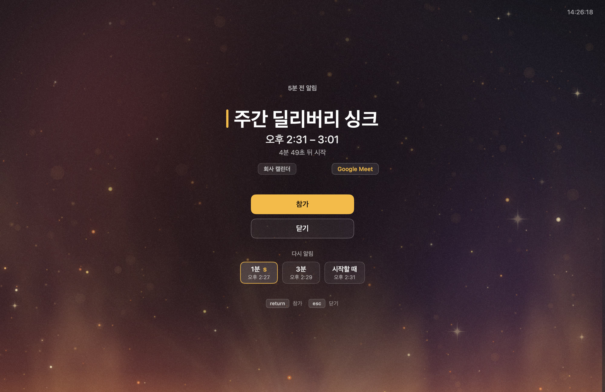
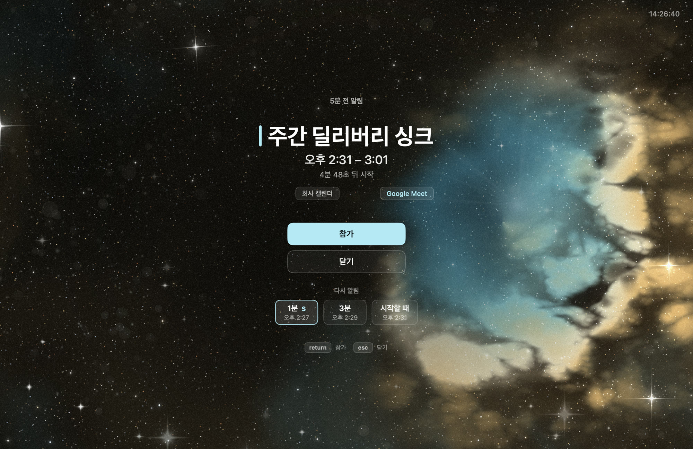
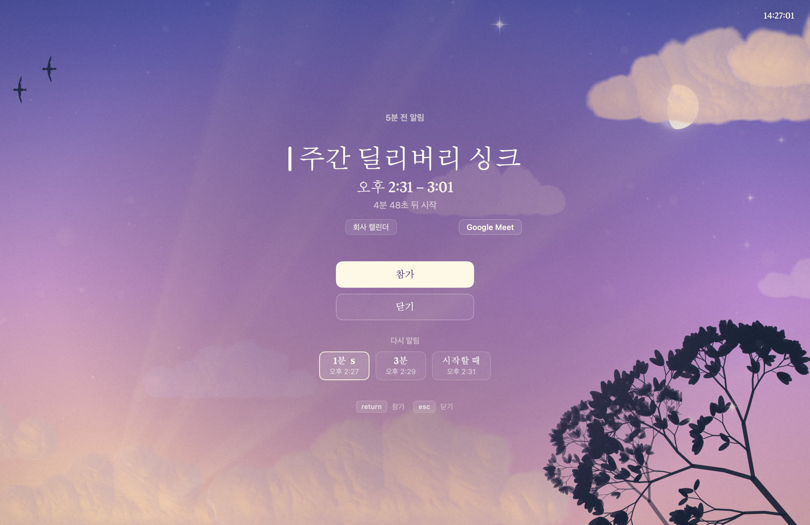
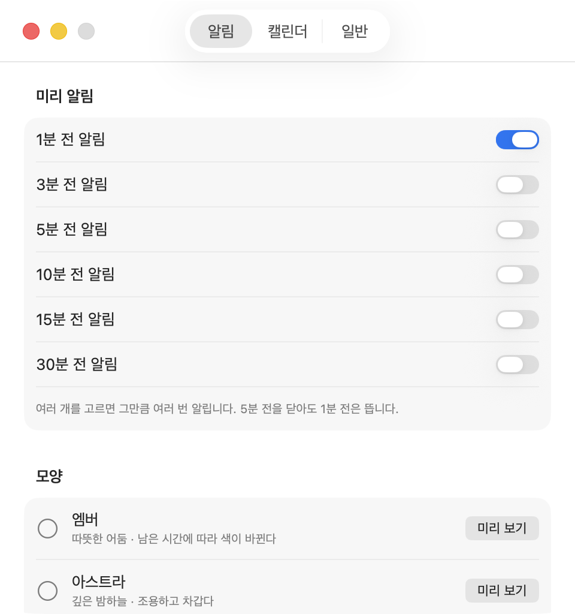

macOS 15.2 이상
놓치라고 만들어진 것처럼 생겼습니다
회의를 놓치지 않게, 화면을 통째로 덮습니다.
macOS 알림 센터의 배너 이야기입니다. 화면 구석에 잠깐 떴다 사라지고, Slack 알림·메일 알림과 같은 자리에 같은 모양으로 나옵니다. 언틸리티는 반대로 갑니다 — 회의 시작 전에 화면 전체를 덮고, 닫기 전에는 사라지지 않습니다.
차례
회의 시작 전 모든 디스플레이를 전체 화면으로 덮습니다. 전면 앱은 빼앗지 않고, 탈출구는 Esc 하나입니다. 네트워크를 아예 쓰지 않습니다.
구석에서 5초
무언가에 집중해 있으면 배너는 시야에 들어오지 않습니다. 봤어도 5초 뒤엔 사라져 있습니다. 알림이 도착했다는 사실과 그것을 읽었다는 사실 사이에 아무 보장이 없습니다.
그래서 이 앱은 타협하지 않는 쪽을 골랐습니다. 회의 시작 전에 연결된 모든 디스플레이 각각에 전체 화면 창을 띄웁니다. 다른 앱이 네이티브 전체 화면이어도 그 위에 뜨고, 모든 Space에 걸쳐 뜨며, Space를 옮겨도 따라옵니다. 소리를 한 번 냅니다 — 화면을 안 보고 있을 때를 위한 나머지 절반입니다. 반복하지는 않습니다.
덮는다는 결정에는 값이 붙습니다. 그 값을 치르는 방식이 이 앱의 나머지 전부입니다.

왼쪽: 5초 뒤 사라진다.
오른쪽: 닫기 전에는 사라지지 않는다. 1352×878 화면을 통째로 덮은 상태. 회의 제목과 캘린더 이름은 가명입니다.
[A팀] 주간 리뷰
테마: 페이블 · 톤: 여유해는 수평선 아래에 있어 원반은 보이지 않고 광채만 남습니다. 구름은 밑면이 노을에 물듭니다. 가운데 조판은 실제 알림 화면의 규격을 그대로 옮긴 것입니다.
덮되, 빼앗지 않는다
무엇을 안 띄울지가
이 앱의 절반입니다
취소된 일정, 종일 일정, 내가 거절한 일정, 4시간 넘는 장시간 일정, 이미 끝난 일정은 기본값으로 안 띄웁니다. “컨퍼런스 월~수” 같은 일정이 앱을 켤 때마다 화면을 덮으면 안 되니까요.
판정은 순수 함수 하나가 합니다. 제외 조건표의 행 순서와 코드의 조건 순서가 일치해야 한다고 사양에 적어 뒀습니다. 위에서부터 평가하고 하나라도 걸리면 제외합니다.
캘린더는 계정별로 묶어 보여주고 끄고 싶은 것만 끕니다. 저장하는 것은 켠 것이 아니라 끈 것입니다 — 회사가 새 캘린더를 붙였을 때 기본이 “꺼짐”이 되어 회의를 조용히 놓치는 일이 없도록.
| 행 | 조건 | 기본값 |
|---|---|---|
| F2-1 | 취소된 일정 | 안 띄움 |
| F2-3 | 종일 일정 | 안 띄움 |
| F2-5 | 내가 거절한 일정 | 안 띄움 |
| F2-7 | 장시간 일정 | 기본 4시간 |
| F2-8 | 이미 끝난 일정 | 안 띄움 |
전부 설정에서 바꿀 수 있습니다. 통과한 이벤트는 그다음 EventKey 로 중복을 지웁니다.
안 뜬 이유가 조건 번호와 함께 적혀 있어서, “왜 안 떴지”를 추측하지 않아도 됩니다.
엠버
화로 앞. 열기 아지랑이와 불씨가 떠오릅니다. 빛이 아래에서 옵니다.
#FFB829#8C333D#4D2E6B#17141C

아스트라
발광 성운. 청록 공동과 금빛 먼지 벽, 별 16,000개. 팔레트에서 보라를 전부 뺐습니다.
#A8EBF7#57D1EB#DBA85C#070706

페이블
저녁 하늘. 해는 수평선 아래, 원반 없이 광채만. 지나가는 새 무리와 달.
#FFF7E6#FFC78F#C285D6#4D52A8
색이 곧 정보입니다. 남은 시간에 따라 광원의 색이 바뀌고, 강조 막대와 버튼도 같이 갈아입습니다.
보고 싶을 때는
⌃⌥⌘U
⌃⌘Q 입니다.알림이 없을 때도 같은 배경에 큰 시계와 다음 회의를 띄웁니다. 자리를 비울 때 화면을 덮고, 돌아왔을 때 다음 회의가 바로 보입니다.
위아래 방향키나 스크롤로 뒤의 회의를 넘겨 보고, 화면 오른쪽의 점이 지금 몇 번째 칸인지 말합니다. 떠 있는 동안 단축키를 다시 누르면 테마가 바뀌고 그대로 저장됩니다 — 테마는 여기서 고르면 됩니다.
이 화면은 정보 화면이 아니라 보는 화면입니다. 그래서 조작을 말하는 것들은 평소에 숨어 있다가 마우스를 움직이면 떠오릅니다.
- ↑↓앞뒤 회의 넘기기
- return참가
- esc닫기
- ⌃⌥⌘U열기 · 다시 누르면 테마 순환
실측란
반올림한 마케팅 숫자가 아니라 측정값 그대로 적습니다.
모든 수치는 2026-09-17 기준 기록입니다. 코드가 바뀌면 이 지면도 바뀝니다.
@Test 개수 (2026-09-17 기록 시점 178개 통과)AlertEngine 라인 커버리지 — 오케스트레이터가 커버리지 밖에 있지 않다는 뜻isCurrentUser 가 거짓말을 한 횟수(eventIdentifier, startsAt) 충돌 — 같은 회의가 두 캘린더에store.sources 중 이벤트 캘린더가 0개인 회의실 리소스. 걸러내야 실제 계정 수 3개가 나옵니다lsof -i 행 수 · nettop 행 수고친 것들
실측이 사양을 여러 번 바꿨습니다. 바뀐 자리를 지우지 않고 남깁니다.
-
엔타이틀먼트로 막아 뒀으니 괜찮다(취소된 문장)
샌드박스를 끄면 엔타이틀먼트는 아무 제약도 하지 않습니다. 그래서 네트워크 미사용은 코드 규율과
lsof·nettop실측으로만 담보한다고 사양에 명시했습니다. -
정확도를 위해 beginActivity(.userInitiated)(취소된 문장)
그 옵션은 유휴 절전까지 막았습니다.
.userInitiatedAllowingIdleSystemSleep으로 바꿨습니다.pmset -g assertions에 아무것도 안 나오는 것이 정상입니다. -
앱이 뜨자마자 EKEventStore 를 만들고 그다음에 권한을 묻는다(취소된 문장)
권한을 받기 전에 만든 store 는 그 세션 내내 캘린더가 0개입니다. 첫 설치자가 앱을 다시 켜기 전까지 알림을 하나도 못 받았습니다. 허용 직후
store.reset()하도록 고쳤습니다 (0.2.7). -
LSHasLocalizedDisplayName 으로 Finder 파일명도 한글이 된다(취소된 문장)
두 번 시도해 실패했습니다. 앱 내부 UI 와 설정 창 제목에는 반영되지만 Finder 파일명은 안 바뀝니다. 미해결입니다.
캘린더를 읽기만 하고 아무 데도 보내지 않습니다. 분석도, 크래시 리포팅도, 업데이트 체크도 없습니다.
선언이 아니라 측정입니다. 직접 확인할 수 있습니다.
SPEC.md무엇을 만들 것인가 — 불변 사양PROGRESS.md어디까지 왔고 무엇을 실측했는가docs/signing.md코드서명 절차와 그 근거
저장소는 아직 비공개입니다. 공개하면 이 세 문서가 먼저 읽히도록 돼 있습니다.
이 저장소는 코드보다 판단의 기록이 많습니다.
설치에 5분,
한 번만 하면 됩니다
Releases 에서
Untillity-x.y.z.dmg를 받습니다.dmg 를 열고 앱을 응용 프로그램 폴더로 끌어다 놓습니다 — dmg 안에서 바로 열지 마세요. App Translocation 으로 임시 경로에 복사돼 실행됩니다.
응용 프로그램 폴더에서 두 번 눌러 엽니다.
경고가 뜨면 「완료」를 누릅니다.
시스템 설정 → 개인정보 보호 및 보안 → 맨 아래 「보안」에서 「그래도 열기」. 이 버튼은 앱을 연 뒤 약 1시간만 보입니다.
확인 창이 한 번 더 뜹니다. 가운데 「그래도 열기」를 누르고 Touch ID 또는 암호를 승인합니다.
Dock 에 아무것도 안 뜨는 것이 정상입니다 — 메뉴 막대 전용 앱입니다.
캘린더 접근을 물으면 「전체 접근 허용」. 읽기만 하고 어디에도 보내지 않습니다.
설정 창에서 「로그인할 때 언틸리티 시작」을 켜두면 끝입니다.

자주 묻는 것
왜 설치할 때 경고가 뜨나요? 위험한 앱인가요?
Return 을 누르면 앱이 삭제됩니다. 설치 안내를 보면서 하세요. 한 번만 통과하면 이후 업데이트에서는 다시 묻지 않습니다.제 캘린더 내용이 어디로 가나요?
lsof -i -p <pid> 와 nettop -p <pid> 를 돌려 연결이 0인 것을 직접 확인할 수 있습니다(개발 중 실측에서도 두 명령 모두 행 0개였습니다). 로그는 ~/Library/Logs/Untillity/untillity.log, 사용자 홈 안에만 남습니다.어떤 권한을 요구하나요?
RegisterEventHotKey 로 만들어서 둘 다 접근성 권한 없이 동작합니다.어떤 캘린더를 지원하나요? 구글 로그인이 필요한가요?
알림이 하나도 안 떠요.
[디버그] 로그 폴더 열기. [권한] 읽기 가능 → 이벤트 캘린더 N개 줄의 N이 0이면 캘린더를 못 읽고 있는 것이고, 회의가 있는데 안 떴다면 [판정] 줄에 제외 사유가 조건 번호와 함께 적혀 있습니다(예: F2-7 장시간 일정). 참고로 0.2.7 이전 버전에는 첫 설치 직후 그 세션에서 캘린더가 비어 보이는 결함이 있었고, 지금은 권한을 받은 즉시 캘린더를 다시 읽도록 고쳐져 있습니다.메뉴 막대에 아이콘이 안 보여요.
‹ 를 눌러 숨은 영역을 펼쳐 보세요. 아이콘이 거슬리면 설정에서 끌 수도 있습니다 — 꺼도 알림은 그대로 뜹니다.알림 때문에 맥이 계속 깨어 있지는 않나요? 배터리는요?
pmset -g assertions | grep -i untillity 이고, 아무것도 안 나오는 것이 정상입니다. 평소 CPU는 거의 0이고 메모리는 47MB 안팎입니다.대기 화면은 화면 잠금인가요?
Esc 를 누르거나 클릭하면 닫힙니다. 자리를 비울 때 화면을 덮고 돌아왔을 때 다음 회의를 바로 보려는 화면이지, 잠그는 화면이 아닙니다. 진짜 잠금은 macOS 의 ⌃⌘Q 입니다.지우려면 어떻게 하나요?
Untillity.app 을 휴지통으로 옮기면 됩니다. 캘린더 권한까지 지우려면 tccutil reset Calendar com.bonjugi.untillity (sudo 필요 없습니다), 로그는 ~/Library/Logs/Untillity/ 를 지우면 됩니다. 앱이 남긴 것은 그 둘과 설정값뿐입니다.